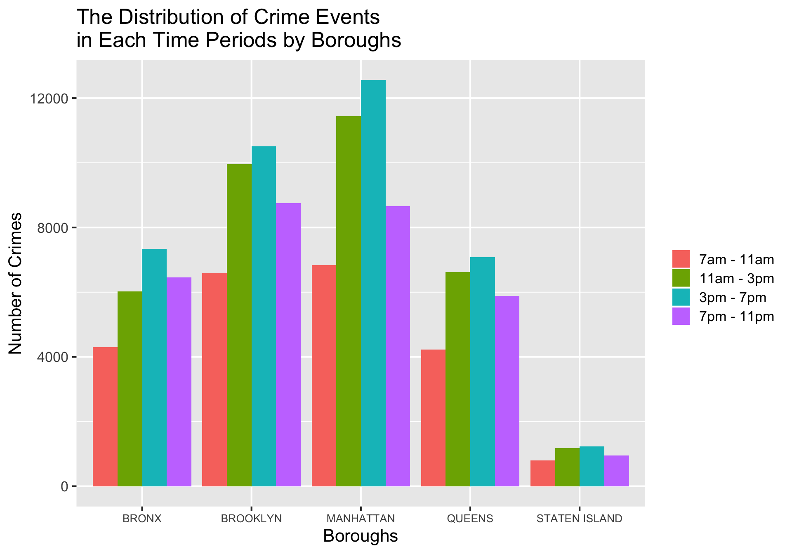
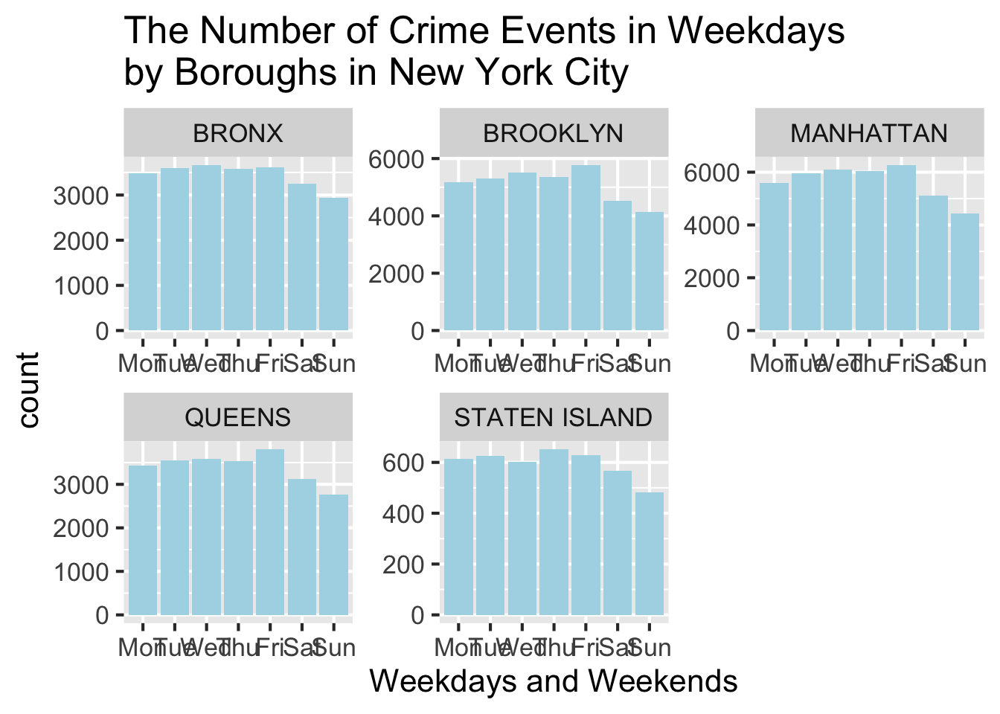
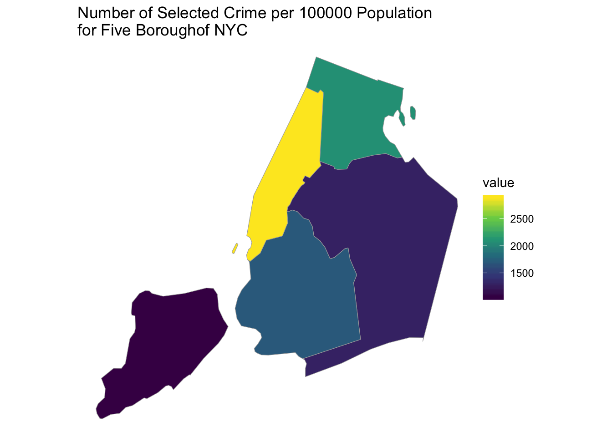

Chapter 5 Results
In section 3, we have dropped some trivial crime types like “CRIMINAL MISCHIEF” and now we only pay attention to the common crime types of events happening in NYC. There are 11 crime types in total and we can see the frequency rank of them in the following graph.

As we can see, THIEF is the most common crime in NYC and we deduce that this phenomenon may result from the low cost of theft. The offense also appears very common, because there are many different types of crime that could be classified as OFFENCE. ARSON, MURDER, and KIDNAPPING are the least common crime types in the dataset.
For the convenience of the later researches, we drop 5 types of crime from our dataset: ARSON, MURDER, KIDNAPPING, DRUG, and FRAUD.
MURDER related data has a great amount of missing data for latitude and longitude, also ARSON, MURDER, and KIDNAPPING contain very few useful pieces of data, which is difficult to conduct instructive analysis. We drop FRAUD because this could be avoided effectively. For DRUG, although it is very common, usually it is the indirect reason for other crimes like offense or murder, the crime DRUG itself usually doesn’t cause great harm to society.
5.1 Whcih Crime Types Are More Common in Each Borough?
## Scale for 'fill' is already present. Adding another scale for 'fill',
## which will replace the existing scale.
After selecting the six crime types that most related to us, we take the population of each borough into account and calculate the crime rate of selected crime in five boroughs. The Boroughs with the top three highest crime rates are Manhattan, Bronx, and Brooklyn, whereas Queens and Staten Island have a lower crime rate, and this forms a spatial pattern in the graph. We are surprised about the finding because it breaks our “stereotype” that Brooklyn is the most dangerous borough in New York City.
However, we cannot judge which county is more dangerous for us and which county is safer from this graph. Since a different person may have different ranks for the dangerousness of the crime types.

The above graph shows the exact crime rate for each type in five boroughs. The most frequent crime types are OFFENSE and THEFT for all boroughs. As we discussed above, the cost of theft is the lowest and the definition of the offense is broadly defined which could be the reason for the high frequency of these two crime types.
Therefore, we focus on the other four crime types. Interestingly, Brooklyn has the highest crime rate for all four severe crime types(Rape, Robbery, weapon, burglary) but the total crime rate of Brooklyn is actually lower than that of Manhattan. It seems that the crimes that happened in Brooklyn are more likely to be some severe crimes.
Bronx has the second highest total crime rate and also the second highest rate for all severe crime types. Therefore neither Bronx nor Brooklyn is a good choice for a student like us to live concerning safety.
For Staten Island, the frequency of all crime types is significantly lower than those of the other four boroughs. From the safety concern, Staten Island may be a good choice for moving to. However, the commute time should also be taken into account for final decision making.
5.2 Which Borough is Safer Based on Crime Time?
First, We want to figure out if there is a special time in the year where more crimes happen. So we build the following graph for recognizing time series patterns.

As shown in the graph, more crimes happened in early January and summer in 2019. Early January, especially during the new year celebration time, since more people went out for celebrations, the raise in crime amount is reasonable. Besides, summertime is another period for more crimes. It may due to the relation between weather and people’s moods.
Since this research is aimed to find a suitable and safe region for university students to live, we want to see the time series pattern in each borough.
Among 5 boroughs, There are small decline trends after August in all Boroughs except Manhattan which means the crime rate for all Boroughs except Manhattan may continue to decline after September. Since many lease periods begin around September, Queens may be a better choice to living than Manhattan from the plots above.
As a student, we rent an apartment because we need to go to school or work. So it is very important to avoid the places that have a higher chance of crime when we are walking to school, or coming back home. Therefore, we have broken down the time periods that the crime happened into four ranges:
- 7 am - 11 am
- 11 am - 3 pm
- 3 pm - 7 pm
- 7 pm - 11 pm
The period we care most about is the following:
- 7 am - 11 am (the time when we go to school or work)
- 3 pm - 7 pm (the time we go back to home )
- 7 pm - 11 pm (the time we go back to home when we have night class)

From the graph above, there is the same pattern for every borough. The descending order of number of crimes is 3pm -7pm, 11am - 3pm, 7pm - 11pm, and 7am - 11am. Separating the time period doesn’t help us figure out which borough has an apparent advantage to live. However, we can adjust our schedule base on the graph above. For example, if you live in Manhattan, going out before 11 am and back home after 7 pm can help you avoid more crimes.
As full-time students, the frequency we go outside depends on days: we go out more frequently from Monday to Friday rather than weekends. Therefore we want to find a borough with a lower frequency of crime events in weekdays, and the plot is as follows:

Based on the above plot, the weekdays’ pattern is similar for each borough, whereas the weekends the occurrence of crime events is relatively infrequent compared to weekdays. Since we will go outside more during weekdays, the graph above doesn’t help us find out the most suitable borough. However, the graph reminded us that we should try to choose safer periods to go outside on Friday.
5.3 Which Borough is Safer for Student Age Groups?
Since most of the full-time students are in the age group 18-24, and we want to find how these students including us are related to the victims of crime events, so we extract the 18-24 group of each borough and draw the following barplot:
df_age <- subset(df_select, as.character(VIC_AGE_GROUP) %in% c("<18", "18-24", "25-44", "45-64","65+") )
df_age2<-subset(df_age, as.character(VIC_AGE_GROUP)=="18-24")
#df_age2 <- df_age2$VIC_AGE_GROUP
df_age2 <-df_age2%>%
group_by(df_age2$BORO_NM) %>%
summarise(count=n())%>%
ungroup()
names(df_age2)[1] <- "Borough"
df_age2$count <- df_age2$count/ChorDF$Population*100000
names(df_age2)[2] <- "Rate"
ggplot(df_age2, aes(x=reorder(Borough, -Rate), y=Rate))+
geom_bar(stat = "identity",fill="lightblue")+
xlab("Boroughs")+
ggtitle(paste("The Number of Victims per 100000 People", "in 18-24 Age Group by Boroughs in New York City", sep="\n"))+
theme_grey(16)
For the plot above, we convert the count of crime events to crime rate per 100000 people, and we can see clearly that Manhattan has the largest crime rate for the age group 18-24, while Staten Island and Queens have the smallest crime rate. Combining with the result from crime types part(Manhattan and Queens are two best choices), Queens should be a better choice for full-time student than Manhattan.